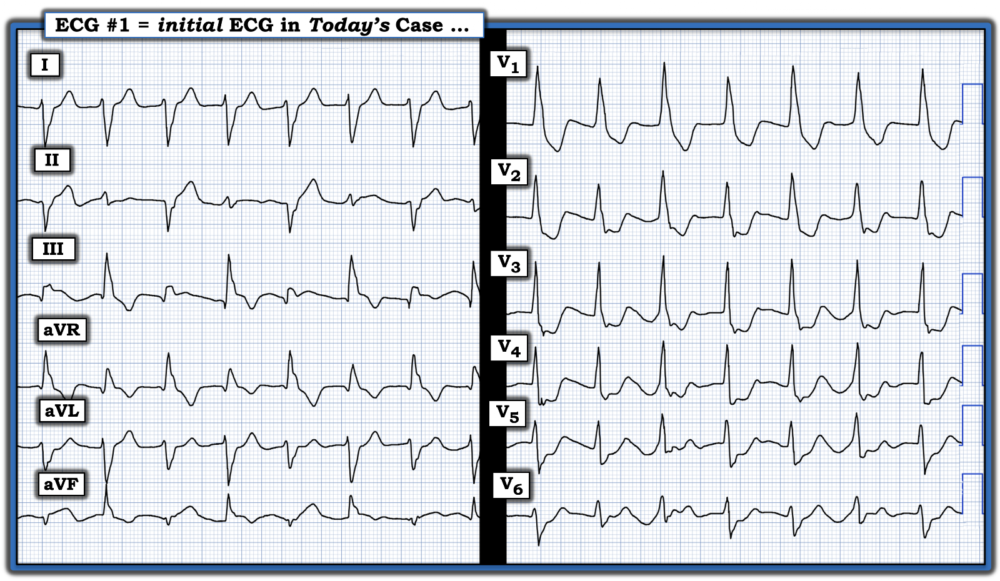
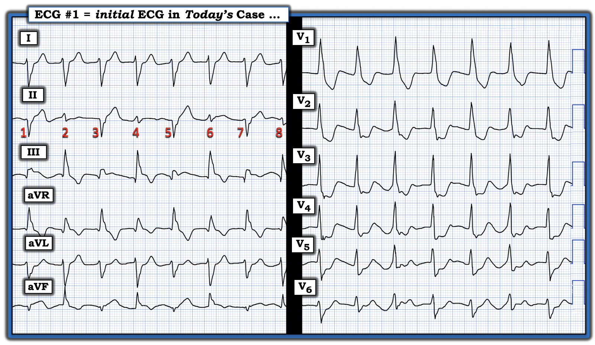
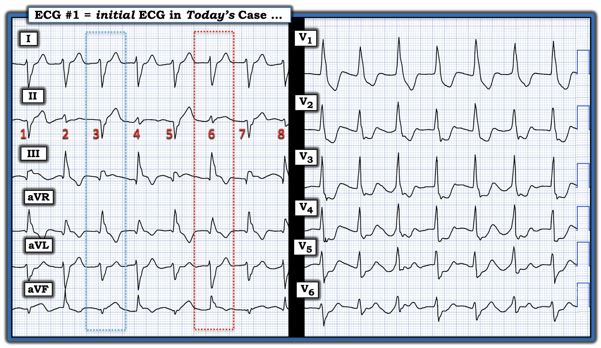
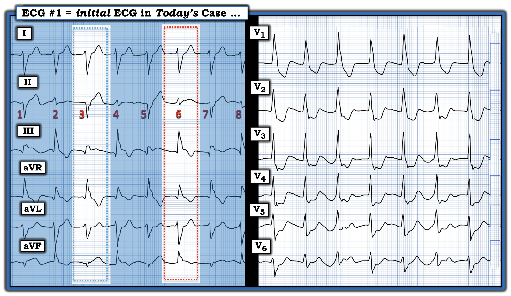
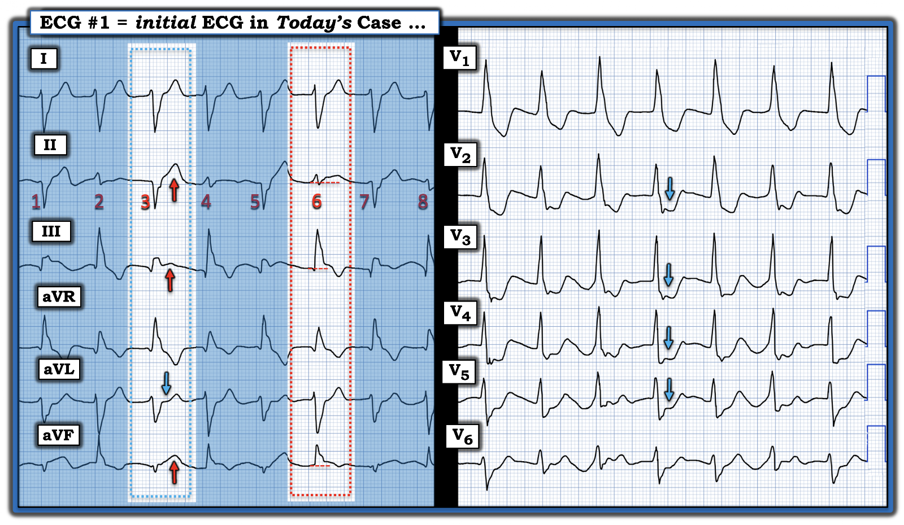

ECG Blog #536 — Vì sao có 2 hình dạng QRS?
Điện tâm đồ ở Hình 1 được gửi cho tôi để xin ý kiến. Lúc đầu tôi không có thông tin lâm sàng nào.
CÂU HỎI:
- Đây là nhịp gì?
- Vì sao lại có 2 hình dạng QRS khác nhau?
- Nguyên nhân nền nhiều khả năng nhất của nhịp này là gì?


Suy nghĩ của tôi:
Nhịp chung ở Hình 1 có vẻ đều, với QRS giãn rộng rõ ràng — và tần số thất hơi dưới 100 lần/phút (tức là khoảng R-R dài hơn 3 ô lớn một chút).
- Có 2 hình dạng QRS khác nhau (thấy dễ nhất ở chuyển đạo II và III).
- Dù khoảng R-R thay đổi đôi chút — tôi cho rằng điều này là do khó xác định chỗ bắt đầu của QRS ở một số chuyển đạo.
- Không có sóng P. Gợi ý duy nhất về hoạt động nhĩ mà tôi thấy là có thể có sóng P ngược dòng ở một vài chuyển đạo trước tim.
ĐIỂM THEN CHỐT (PEARL) #1: Bản ghi này nhấn mạnh khái niệm quan trọng rằng "12 chuyển đạo thì Tốt hơn Một" — vì nếu chỉ nhìn chuyển đạo I và V1 (và/hoặc chuyển đạo V2,V3,V4) — rất dễ nghĩ rằng nhịp này đơn giản chỉ là AIVR (nhịp tự thất gia tốc — Accelerated IdioVentricular Rhythm).
- Thay vào đó, như trình bày ở Hình 2 — rõ ràng có hình dạng QRS luân phiên, thay đổi theo kiểu cách một nhát.


Chuyện gì đang xảy ra?
Dựa trên những gì thấy ở Hình 2 — tôi nghĩ như sau:
- Có nhịp QRS rộng đều với tần số ~95 lần/phút — nhưng không có dấu hiệu rõ ràng của hoạt động nhĩ. Hình dạng QRS không phù hợp với bất kỳ dạng blốc dẫn truyền nào đã biết — nên nhiều khả năng đây là một nhịp thất.
- Nhiều chuyển đạo gợi ý mạnh rằng hình dạng QRS luân phiên cách một nhát — nhưng không có lời giải thích vì sao lại như vậy (tức là không có sóng P nào có thể đang được dẫn truyền — và không có thay đổi đáng kể nào của khoảng R-R có thể gây ra hiệu ứng liên quan tần số).
- ĐIỀU CỐT LÕI: Tôi đi đến kết luận rằng nhịp ở Hình 2 nhiều khả năng nhất là một loạn nhịp hiếm gặp có tên VT hai chiều (BiDirectional VT).
Về thuật ngữ:
Trước đây tôi đã điểm lại khái niệm "AIVR" (nhịp tự thất gia tốc — Accelerated IdioVentricular Rhythm) — là một dạng chậm hơn của "VT" (Xem ECG Blog #108).
- Về mặt kỹ thuật, AIVR không phải là "VT" — vì tần số thất không ≥100 lần/phút. Nhưng nhịp thất được gọi là AIVR rõ ràng là nhanh hơn tần số "thoát" thất thông thường (bình thường nằm trong khoảng 20-40 lần/phút) ==> nhiều người ưa gọi AIVR là một dạng "VT chậm".
- Như đã nhấn mạnh trong Blog #108 — tầm quan trọng của việc nhận ra AIVR phụ thuộc vào bối cảnh lâm sàng mà nó xuất hiện (tức là AIVR thường là một loạn nhịp tái tưới máu ở bệnh nhân mới bị nhồi máu cơ tim).
- ĐIỂM THEN CHỐT #2: Mỗi khi thấy AIVR — tôi cân nhắc kỹ khả năng bệnh nhân có thể đã bị một nhồi máu cơ tim gần đây mà không được phát hiện.
VT hai chiều là gì?
Tôi đã trình bày một ca VT hai chiều trong ECG Blog #436:
- Như đã bàn trong ECG Blog #231 — VT hai chiều là một dạng VT đặc biệt, trong đó có sự luân phiên trục QRS từng nhát một. Dạng VT độc đáo và rất ít gặp này được phân biệt với PMVT (VT đa dạng — PolyMorphic VT) và với VT đa hình thái (pleomorphic) — vì một kiểu hình dạng QRS luân phiên nhất quán được thấy cách một nhát trong suốt cơn VT.
- Điển hình trong VT hai chiều — có các khoảng R-R luân phiên dài-rồi-ngắn tương ứng với hình dạng QRS luân phiên. Tuy vậy — như đã thấy ở ca tôi trình bày trong ECG Blog #436 (cũng như ở ca hôm nay) — QRS giãn rộng, cùng với việc khó xác định chỗ khởi đầu QRS ở một số chuyển đạo, có thể khiến khó phân biệt sự luân phiên tinh tế về độ dài khoảng R-R với một nhịp thất trông có vẻ khá đều.
- Về mặt kỹ thuật — điều này đặt ra câu hỏi liệu nhịp hôm nay có thể chỉ đơn giản là AIVR với các vị trí lối ra (exit site) luân phiên giải thích cho hình dạng QRS luân phiên hay không (như tôi có nhắc đến khi bàn luận trong ECG Blog #231). Dù hoàn toàn thừa nhận những cân nhắc lý thuyết này — nhận định của tôi về nhịp hôm nay vẫn không đổi = giải thích nhiều khả năng nhất cho nhịp ở Hình 1 là VT hai chiều.
ĐIỂM THEN CHỐT #3: Số nguyên nhân gây VT hai chiều khá hạn chế. Theo tổng quan của Almarzuqi và cs. (Vasc Health Risk Mgmt 18:397-406, 2022) — Các nguyên nhân có thể gây VT hai chiều gồm:
- Ngộ độc digitalis.
- CPVT (VT đa dạng do catecholamine — Catecholaminergic PolyMorphic VT).
- Thiếu máu cục bộ cơ tim cấp.
- Liệt chu kỳ hạ kali máu có tính gia đình.
- Sarcoidosis tim.
- U tim nguyên phát và/hoặc di căn tim.
- Hội chứng Andersen-Tawil ( = Hội chứng QT dài, típ 7).
- Viêm cơ tim cấp.
- Một số trường hợp quá liều thuốc/chất (ngộ độc aconitine, ngộ độc caffeine nặng).
ĐIỂM THEN CHỐT #4: Vì VT hai chiều hiếm gặp như vậy — việc số 1 cần làm khi nghĩ tới chẩn đoán này là xem bệnh nhân có thể có một trong các nguyên nhân tiềm năng của nhịp này đã liệt kê ở trên hay không.
- Những năm trước — ngộ độc digitalis từng là nguyên nhân thường gặp nhất của VT hai chiều. Điều này dường như không còn đúng nữa, do Digoxin nói chung được dùng ít hơn (và ở những trường hợp vẫn còn được kê Digoxin — ngộ độc ngày nay ít gặp hơn nhiều vì liều dùng thuốc này thấp hơn trước rất nhiều).
- Ngoại trừ thiếu máu cục bộ cơ tim và viêm cơ tim — các bệnh lý khác được liệt kê là nguyên nhân tiềm năng của VT hai chiều đều hiếm (điều này giải thích vì sao VT hai chiều hiếm gặp).
- Xin nhấn mạnh: Theo kinh nghiệm của tôi — VT hai chiều không phải là biểu hiện thường gặp của thiếu máu cục bộ cơ tim. Nhưng điểm then chốt là luôn luôn phải cân nhắc thiếu máu cục bộ/nhồi máu mỗi khi bạn nghĩ tới chẩn đoán VT hai chiều.
- Về lâm sàng: Cách điều trị VT hai chiều TỐT NHẤT — là xác định bệnh lý gây ra nó, với hy vọng có thể điều trị hiệu quả bệnh lý đó.
Diễn tiến của ca hôm nay:
Hóa ra bệnh nhân hôm nay là một phụ nữ trung niên trước đó khỏe mạnh — đến khoa cấp cứu (ED — Emergency Department) vì CP mới khởi phát (đau ngực — Chest Pain). Tình trạng bệnh nhân xấu đi nhanh chóng, dẫn đến ngừng tim.
- Sau đó là một diễn biến phức tạp, may mắn là tái lập tuần hoàn tự nhiên thành công (ROSC — Return Of Spontaneous Circulation) — và thông tim đã được thực hiện sớm nhất có thể.
CÂU HỎI:
- Bạn nghĩ thông tim cho thấy gì?
GỢI Ý #1: Để thuận tiện đánh giá hình dạng QRST của 2 "họ" phức bộ QRS — ở Hình 3, tôi đã khoanh nhát #3 và nhát #6 trong các hình chữ nhật chấm XANH LAM và ĐỎ.


GỢI Ý #2: Để tập trung hơn nữa vào hình dạng sóng ST-T của 2 "họ" phức bộ QRS — tôi đã làm mờ các nhát còn lại ở chuyển đạo chi.


TRẢ LỜI:
Nhịp hôm nay là VT hai chiều. Điều này có nghĩa là không có phức bộ QRS nào được dẫn truyền bình thường — mà tất cả các nhát trên bản ghi hôm nay đều có nguồn gốc từ thất.
- ĐIỂM THEN CHỐT #5: Phần lớn các bản ghi OMI cấp (nhồi máu cơ tim do tắc — Occlusion-based MI) được nhận ra trên điện tâm đồ sẽ được chẩn đoán dựa trên thay đổi hình dạng sóng ST-T ở các nhát dẫn truyền từ xoang. Đánh giá hình dạng sóng ST-T ở PVC thường không phải là chỉ điểm đáng tin cậy của một biến cố cấp.
- Tuy vậy — đôi khi, hình dạng của ST chênh lên hoặc chênh xuống ở một hay nhiều PVC có thể có giá trị chẩn đoán nhồi máu cấp. Đó chính xác là điều chúng ta thấy ở các PVC trong ECG Blog #359.
- LƯU Ý: Để xem ví dụ một ca mà đánh giá các nhát bình thường (dẫn truyền từ xoang) không đủ để khẳng định OMI cấp — đến mức chẩn đoán nhồi máu cấp chỉ được đưa ra nhờ nhận ra hình dạng sóng ST-T bất thường của một vài PVC — xem Bình luận của tôi ở cuối bài đăng ngày 8 tháng Mười năm 2018 trên Dr. Smith's ECG Blog.
Áp dụng khái niệm nâng cao từ ĐIỂM THEN CHỐT #5 cho bản ghi hôm nay — hình dạng sóng ST-T ở Hình 5 rõ ràng là không tương xứng và "lệch" khỏi những gì ta trông đợi đối với cả hai họ QRS. Cụ thể:
- Họ QRS của các nhát lẻ ở Hình 5 (minh họa bằng nhát #3) — cho thấy ST chênh lên không tương xứng ở các chuyển đạo thành dưới, với ST chênh xuống soi gương ở chuyển đạo aVL (các mũi tên ĐỎ và XANH LAM ở các chuyển đạo này).
- Tinh tế hơn, nhưng vẫn rõ — họ QRS của các nhát chẵn (minh họa bằng nhát #6) — cho thấy ST chênh lên không tương xứng ở mỗi chuyển đạo thành dưới (đặc biệt rõ ở chuyển đạo II do QRS ở chuyển đạo này rất nhỏ).
- Cả hai họ phức bộ QRS đều có mức ST chênh xuống tăng không tương xứng ở các chuyển đạo trước tim giữa của Hình 5 — với các mũi tên XANH LAM ở chuyển đạo V2,V3,V4,V5 của các nhát đánh số chẵn làm nổi bật sự bất thường hiển nhiên của dấu hiệu này qua mức ST chênh xuống nằm ngang (dạng bậc thềm — ledge-like) rất rõ.
KẾT LUẬN CA BỆNH:
Điện tâm đồ hôm nay minh họa một ca VT hai chiều xuất hiện do OMI dưới-sau cấp. Điều này được xác nhận khi thông tim, cho thấy bệnh nhiều nhánh mạch vành với tắc hoàn toàn cấp động mạch vành LCx (động mạch mũ trái — Left Circumflex).


==================================
Lời cảm ơn: Xin cảm ơn Fardeen Baray và Hameedullah Ahmadzai (từ Kabul, Afghanistan) đã chia sẻ ca bệnh và các bản ghi này.
==================================